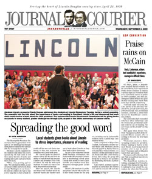
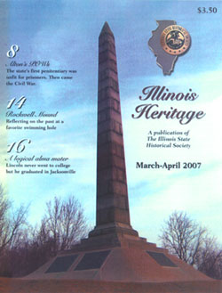

In the Press
Signs of Lincoln's times
By Greg Olson, Jacksonville Journal-Courier
June 14, 2009 — The story of a Civil War hero and Abraham Lincoln campaign music composer is being told in a new outdoor exhibit on East State Street.
Jacksonville's Looking for Lincoln Committee will dedicate its second wayside exhibit near the Gen. Benjamin H. Grierson Mansion, 852 E. State St., at 5:30 p.m. Wednesday. [More story]
Richard Dreyfuss to join scholar in performance
By staff, State Journal-Register
March 16, 2009— Actor Richard Dreyfuss and Lincoln scholar Harold Holzer will perform “Lincoln Seen and Heard” in Jacksonville March 27. [See story]
A call for Lincoln-inspired art
By staff, Jacksonville Journal-Courier
March 12, 2009 — The Jacksonville Lincoln Bicentennial Commission has announced a call for artists for an upcoming exhibit entitled “Inspired by Lincoln.”
[See story]
Looking like Lincoln
By Robert Leistra, Jacksonville Journal-Courier
February 15, 2009 — North Elementary students dressed up in celebration of Lincoln's 200th birthday. [See photo]
2 programs examine images of Lincoln
By staff, Jacksonville Journal-Courier
January 22, 2009 — The image of Abraham Lincoln through the camera lens will form the basis of two presentations Monday by a DePaul University scholar who has studied how photography shaped the public's perception of the 16th president. Mark Pohlad will present "The Camera and Abraham Lincoln" at 11 a.m. in Rammelkamp Chapel on the campus of Illinois College. [More story]
Jax students to get books about Lincoln
By Katie Anderson, Jacksonville Journal-Courier
September 2, 2008 — As part of the statewide Lincoln 200th birthday celebration, the Jacksonville Bicentennial Commission is distributing a free book about Lincoln to every Jacksonville area student from kindergarten through grade 12 this month. [More story]
Jacksonville designated “Looking for Lincoln” site
By Greg Olson, Jacksonville Journal-Courier
March 6, 2008 — Jacksonville was officially designated a "Looking for Lincoln" site Thursday. Hal Smith, director of the Looking for Lincoln Heritage Coalition, came to Jacksonville to make the announcement and to approve a local audio tour called "Voices of Jacksonville." [More story]
Lincoln Bicentennial group starting up
By John W. Ursch, Jacksonville Journal-Courier
August 15, 2007 — Planning for Jacksonville's celebration of Abraham Lincoln's 200th birthday kicked off Wednesday afternoon at the Municipal Building. Dubbed the Jacksonville Lincoln Bicentennial Celebration Steering Committee, the group will plan the festivities and make the arrangements for the official celebration beginning Feb. 12, 2008, and culminating in a gala birthday party a year later. [More story]
“A logical alma mater: Abraham Lincoln and Illinois College”
By Loreli Steuer, Illinois Heritage magazine
March-April 2007 edition &mdash Note: The following paper was presented during the Illinois College Alumni Weekend's "Thinkin' Lincoln" festivities in June 2006.
Welcome to Beecher Hall where the first college classes in the state of Illinois were held 176 years ago beginning on January 4, 1830. Close to that time, in 1831, a young man of 22 named Abraham Lincoln arrived in New Salem, Illinois, just 30 miles away. In the next decade, Lincoln would form six close friendships with IC students and have enough direct and indirect contact with the school throughout his lifetime for a history writer named Eleanor Atkinson to refer, in the early 1900s, to Illinois College as "Lincoln's Alma Mater." [More story]
This page lists press coverage of the Lincoln Bicentennial that mentions or discusses the Lincoln Bicentennial as a project — that is, any aspect of Lincoln Bicentennial overall, such as its structure, success, information, goals, history, or views, and so on.